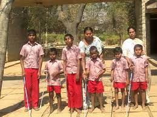

Disabled persons have the right to education, vocational training and rehabilitation which will enable them to develop their capabilities and skills to the maximum and will hasten the process of their social integration or reintegration.

Unemployment allowance to the people with disabilities who are registered with the special employment exchange for more than a year and could not find any gainful occupation.
Lift up specially abled person by all means. Donate for them so that they can get good meal, good clothes, good education and many more things we have but they don't have.